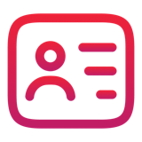

Cheat sheet · UX Designer · 1/2
L'IA à chaque geste du design
L'IA propose, prépare, rédige. Ce qui est un insight, la direction de design, ce qui est prêt à transmettre, c'est toi qui le dis.
Parcours UXà retenir, module par module
- Challenger le brief : une demande arrive avec sa solution : l'IA en contradicteur, puis le problème du client.
- Préparer une recherche : une question demande un souvenir, pas un avis sur l'avenir. Une hypothèse qui contient sa réponse n'a rien à tester.
- Synthèse d'entretiens : un insight se compte et se cite. Un signal isolé reste de côté.
- Personas et journey map : un persona résume des données. Chaque émotion cite sa preuve.
- Flows et wireframes : explore large, puis vérifie contre les règles et le design system. Un manque se signale.
- UX writing : les mots sont une promesse au client. Sans texte pour ses états, un écran n'est pas fini.
- Accessibilité : un ratio se calcule, un critère se cite avec son niveau, la conformité se prouve par des tests.
- Test utilisateur : un scénario ne donne pas la réponse. La gravité se déduit du nombre de participants et de l'impact.
- Handoff : la spec dit ce qui est décidé et ce qui est ouvert, avec tous les états.
 Dès demain
Dès demain
- À ta prochaine synthèse, demande pour chaque insight ses verbatims et ses participants, puis vérifie-les dans les transcriptions.
- Avant de dire qu'une maquette est accessible, teste-la toi-même au clavier et avec un outil de contraste.
Ce que l'IA fait pour toi
- Préparer un guide d'entretien, un protocole de test, des scénarios.
- Trier des transcriptions et des notes de test : regrouper, compter, citer avec le repère.
- Proposer plusieurs directions de flow, des wireframes en texte, des variantes de libellés.
- Relire une description d'écran contre une liste de critères.
- Rédiger une spec de handoff, une demande d'évolution du design system.
 Avant de coller un vrai document
Avant de coller un vrai document
- Quelle sensibilité ? La classification des données de ton entreprise s'applique.
- Ai-je besoin de ce détail ? Souvent les passages utiles suffisent.
- Suis-je dans l'outil autorisé ? Même pour « juste une reformulation ».

Ce qui reste ta décision- Les hypothèses à tester et les personnes à interroger.
- Ce qui est un insight, et son poids.
- La direction de design, et pourquoi tu écartes les autres.
- Ce que l'on promet au client dans les textes.
- La gravité d'un problème, et ce qu'on corrige avant la mise en production.
Les 5 réflexes de toute demande à l'IA
- Donne le contexte utile, et seulement lui : tout occupe la context window.
- Dis le format et les critères attendus.
- Interdis-lui d'inventer : « non observé » quand une information manque.
- Vérifie contre les sources, la transcription ouverte à côté.
- Décide toi-même : insight, direction, gravité, c'est toi.